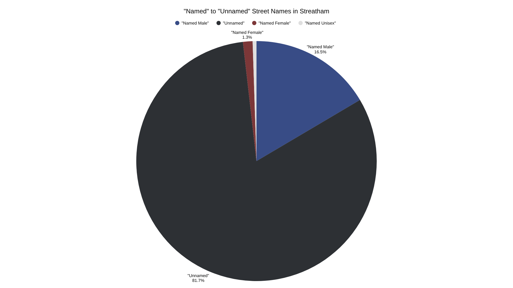
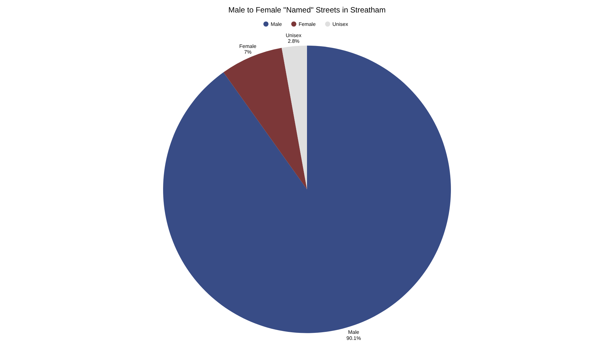
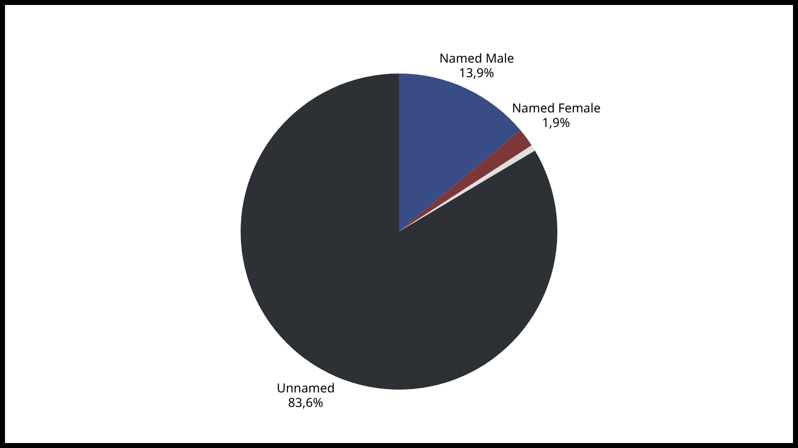
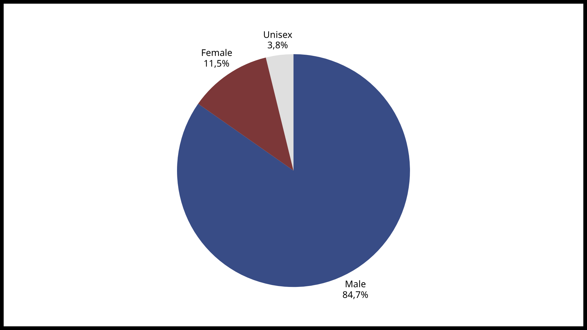

What is a Street Name?
A street name is...
A street name is...
Our data was collected by...
Out of the 388 streets in Streatham, only 18.9% were "named" streets. Of these, the majority were male: 16.5% being named after men, compared to just 1.3% after women (Fig. 1), meaning there were roughly 12 times as many male-named streets to female.
Of all gendered street names, 90.1% were male, 7% female, and 2.8% unisex (Fig. 2). This reveals a clear imbalance in who is publically represented, highlighting how urban spaces reflect historical patterns of who gets recognition and who gets excluded.
Of the small number of female street names (five in total, excluding unisex names), two were named by a single landowner, Beriah Drew: one after his wife's maiden name, Elizabeth Prentis (Brown, 2003, pp.15) and another after his daughter, Jane Angles Fisher (Gower, 2012, pp.16). The remaining female names had no documentation of their names having much or any historical significance that I could find. In contrast, many of the male street names were accompied by a historical story (which can be explored by clicking the markers on the map), reinforcing male visibility and existing historical patterns.


Fig. 1
Fig. 2
Another thing I noticed was that this pattern extended beyond just street names, but in public institutions as well. In Streatham, no schools were found to have had any female names or connotations, compared to the seven named after male figures. This suggests that gender imbalance is not limited to street naming, but is embdedded all throughout the naming of public spaces. These have been plotted as black markers on the map.
Although not the main focus of this project, patterns of racial representation were also evident. Of the male street names identified, only two appeared to be named after people of colour - Namba Roy Close, and Francis Barber Close - compared to at least 19 named after white men. This indicates that inequalities in representation extends much farther beyond gender alone, reflecting greater structures of exclusion within everyday spaces, and shaping whose histories are seen, remembered, and valued..
What I noticed was...


Fig. 3
Fig. 4
My data shows that...


Fig. 5
Fig. 6
Here is a list of references that were used in this website: